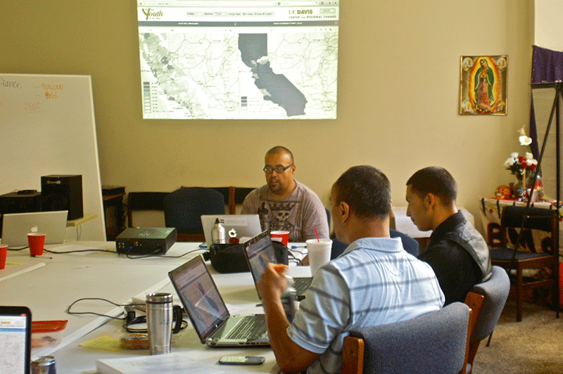

Maps
Putting Youth on the Map provides data maps for youth and adults working to ensure youth well-being in California. The interactive map page lets you:
- See holistic place-based measures of youth well-being and severe isolation from support using the Youth Well-Being and Youth Vulnerability Indices
- View index analyses by sex and race/ethnicity locally and statewide
- Explore other data maps on health, income adequacy, suspensions/truancy, transportation access, young adult voting patterns and more
- Compare and print maps
On this page click “Navigate” in the dropdown menu or scroll down for a presentation on navigating the mapping page. Use “Go to Maps” in the dropdown to start making maps.
